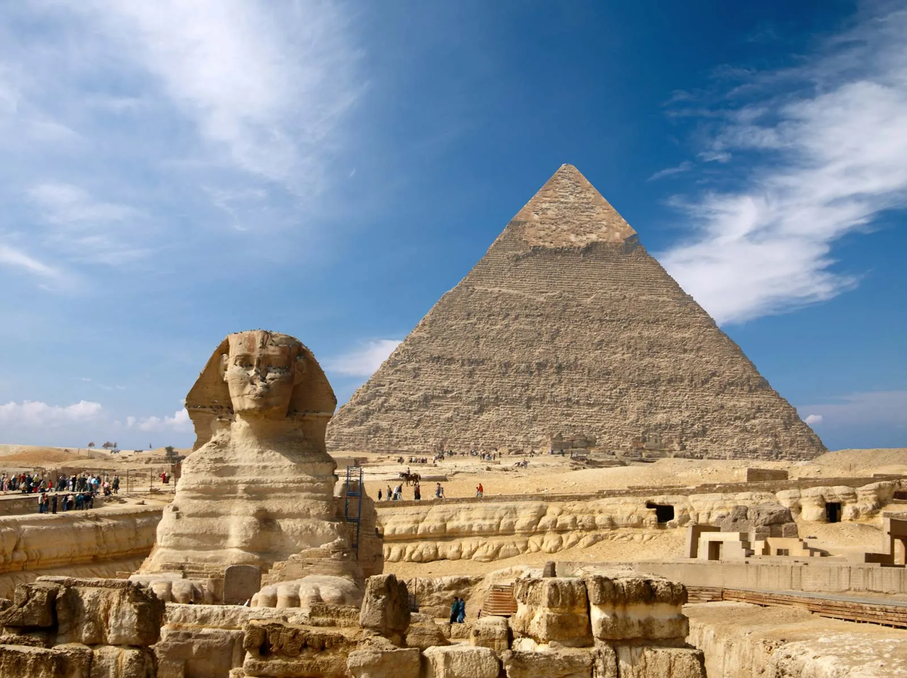
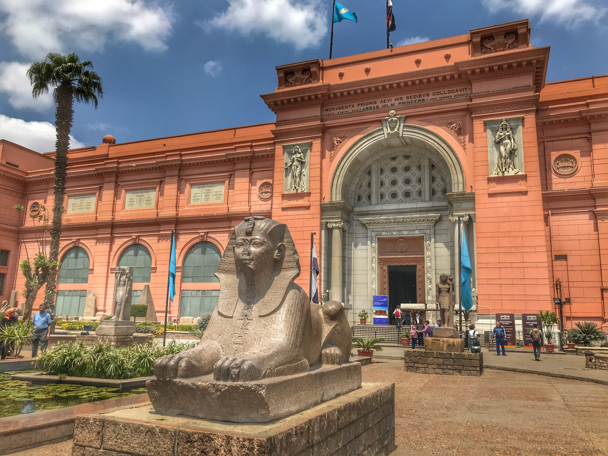
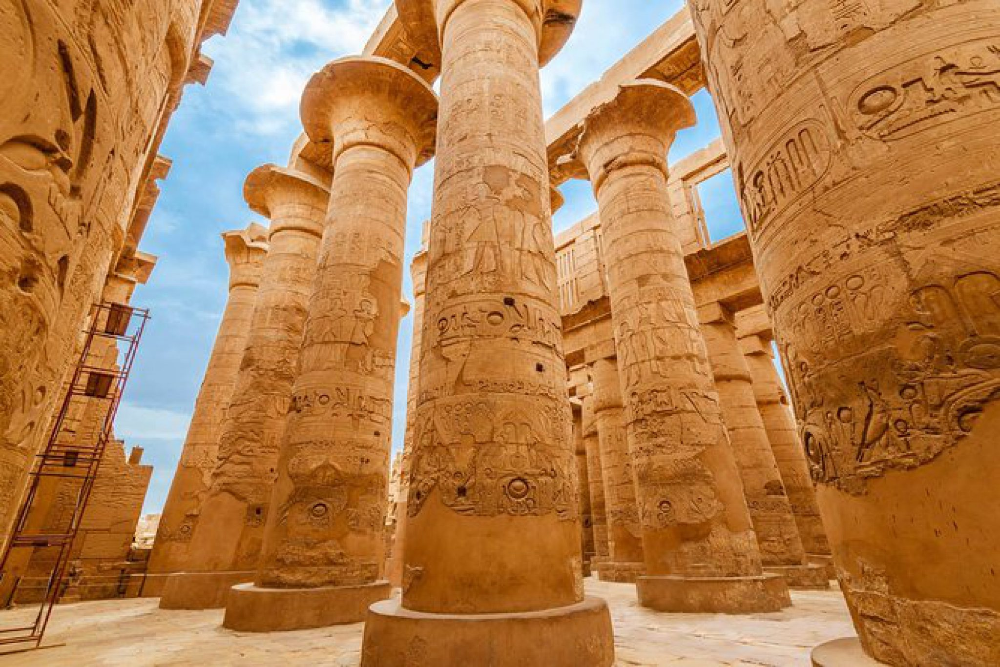

Egypt is a treasure trove of historical and cultural attractions, offering a journey through millennia of human history. The iconic Pyramids of Giza and the Sphinx stand majestically against the desert backdrop, showcasing the architectural prowess of ancient Egyptians. The temples of Luxor and Karnak, adorned with towering obelisks and intricate hieroglyphs, reveal the splendor of the New Kingdom era. In Cairo, the Egyptian Museum houses a vast collection of artifacts, including the glittering treasures of Tutankhamun. The serene waters of the Nile River provide a picturesque setting for river cruises, while the vibrant bazaars, like Khan El Khalili, burst with traditional crafts and aromas. Beyond the historical sites, the Red Sea coast beckons with its crystal-clear waters and vibrant coral reefs, perfect for diving and snorkeling enthusiasts. Each destination offers a unique glimpse into Egypt's rich tapestry of history, culture, and natural beauty, making it a must-visit for travelers from around the world.
Great Sphinx of Giza :

The Pyramids of Giza, including the Great Pyramid, are the last remaining wonders of the ancient world. These monumental tombs were constructed during the Fourth Dynasty of the Old Kingdom. Adjacent to the pyramids stands the enigmatic Sphinx, a colossal limestone statue with the body of a lion and the head of a pharaoh.
The Egyptian Museum in Cairo :

This museum houses the world’s most extensive collection of ancient Egyptian antiquities, including the treasures of Tutankhamun, royal mummies, and a vast array of artifacts spanning over 5,000 years of history.
Luxor and Karnak Temples:

Located on the east bank of the Nile, the temples of Luxor and Karnak are among the most impressive in Egypt. Luxor Temple, dedicated to the Theban Triad, was a center of the Opet Festival. Karnak Temple, the largest religious building ever constructed, features a vast array of decayed temples, chapels, pylons, and other buildings.
all rights reseverd ©